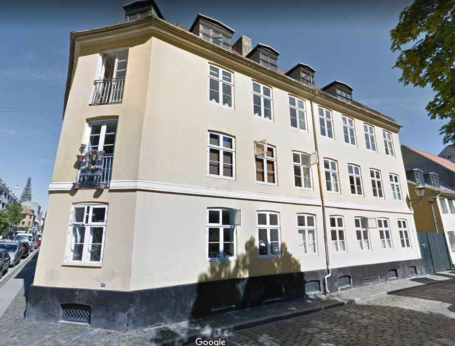

Det Gule Hus skulle rigtig nedbrydes, men da antallet af befolkingen på Christianshavn blev presset, valgte man at købe huset, så de kunne bo der. Gaden var en del af Christianshavns ”arbejderkvarter”. I 1867 boede der i gaden 1.000 personer – eller 7% af hele Christianshavns befolkning. Gaden var dog længere end i dag, fordi den også lå på den anden side af Torvegade, hvor gaden Ved Volden ligger i dag. Lørdag den 20. november 2010 var det 40 år siden, at beboerne købte den kondemnerede ejendom på tvangsauktion for i alt 325.000 kr. De nye ejere, som dengang var unge studerende, stiftede en andelsboligforening og begyndte en gennemgribende renovering af huset.
